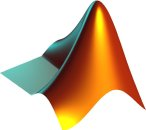

MathWorks
 I joined MathWorks in 2000 in the Consulting Services group. My current role is Director of Application Engineering for Northern Europe. Previously, I was Senior Manager of Application Engineering and Consulting Services for the UK.
I have worked with clients across a range of industries including
- automotive – cars, trucks, tractors, racing cars, …
- aerospace and defence – aircraft, engines, systems, …
- financial services – banks, central banks, data providers, …
- miscellaneous – wind turbines, airports, retailers, …
My areas of technical expertise include
- modeling, control and optimization of dynamic systems
- software development and deployment
- technical workflow assessment and improvement
- data analytics
I have served on strategic advisory teams for MATLAB, Maths Stats & Optimization, Automotive, Financial Services, Consulting, and Application Engineering.
I developed and maintain several public and private MATLAB toolboxes:
- «GUI Layout Toolbox», the layout manager that enables creation of sophisticated MATLAB graphical user interfaces that resize gracefully (with Ben Tordoff)
- «Package Jockey», the MATLAB native package manager that handles dependencies, integrates with projects, and supports custom registries (with Matt Elliott)
- «MATLAB DocStar», the MATLAB toolbox documentation generator that lets you write documentation in Markdown, include graphical and textual output from MATLAB code blocks, and create documentation index files
If you are interested in joining our team, start by browsing our open positions. We also consider unsolicited applications from outstanding candidates.